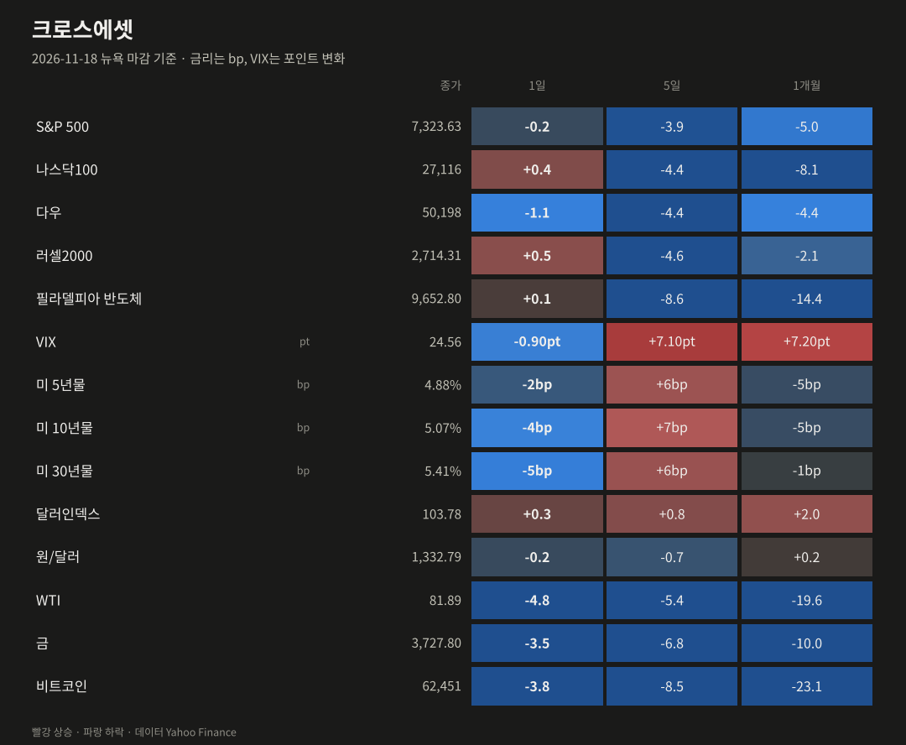
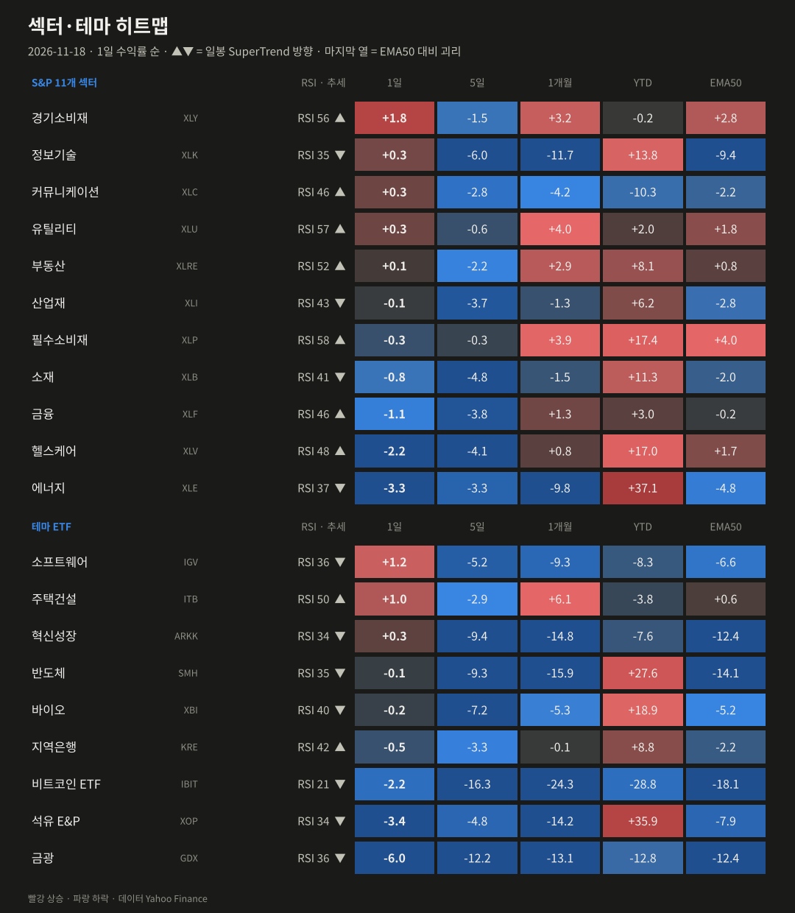
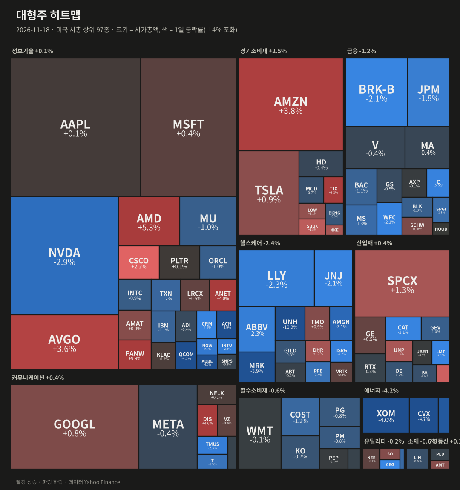
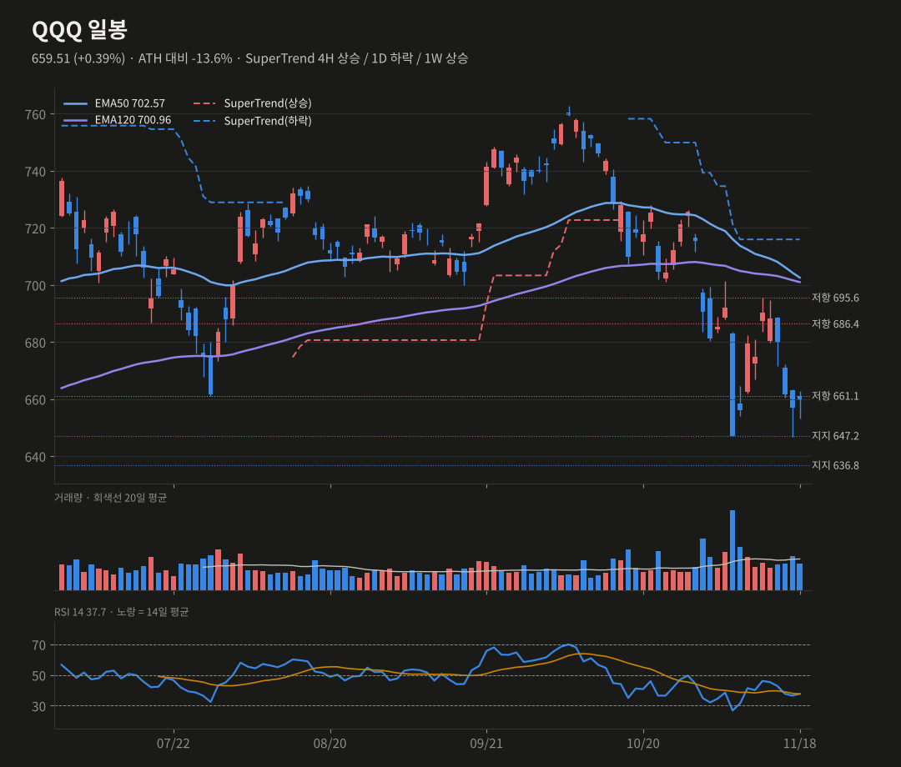
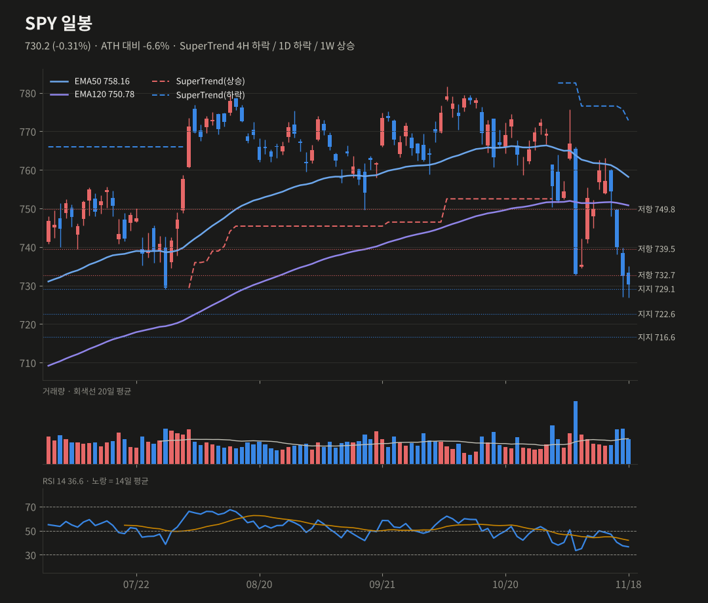
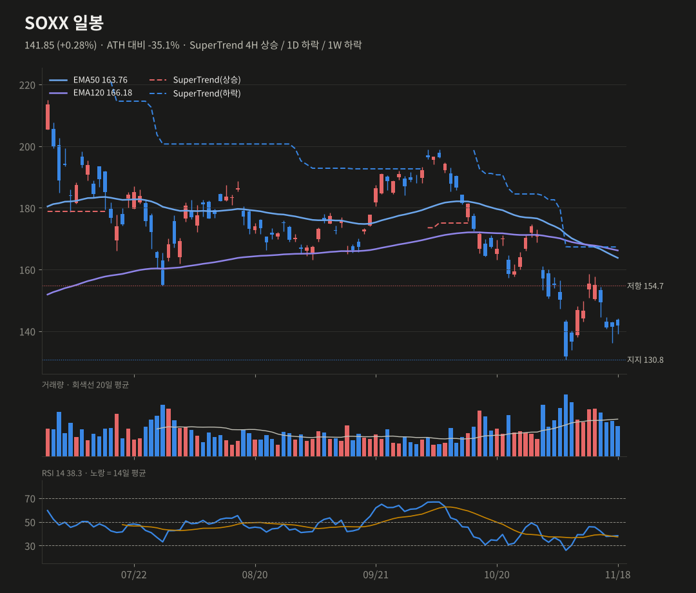
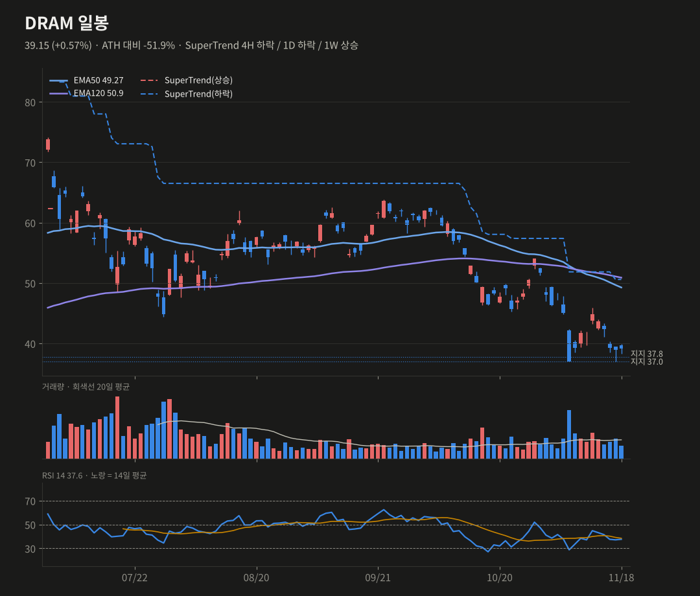

미증시 마감 브리핑
11/18(수) 뉴욕 마감 기준 · 생성 2026-11-19 07:41 KST
엔비디아가 호실적에도 −2.9%, UNH −10%에 다우는 −1.1%였어요. 나스닥100은 AMD·아마존 덕에 +0.4%예요.
S&P 5007,323.63-0.23%
나스닥10027,116+0.42%
다우50,198-1.11%
러셀20002,714.31+0.46%
반도체(SOX)9,652.80+0.10%
VIX24.56-0.90pt
미 10년물5.07%-3.70bp
원/달러1,332.79-0.22%
요약
- 엔비디아는 호실적에도 −2.9%로 5일째 내렸어요. CEO 공백이 부담이에요.
- UNH −10%·휴매나 −12%로 헬스케어가 급락했고, 다우는 −1.1%예요.
- 연준 매파 발언에 1월까지 50bp 인상 확률은 69%예요. 유가·금은 급락했어요.
- QQQ 649.6, SPY 724.5가 지지선이고, 오늘 밤 앤트로픽이 상장해요.
종합 판단
엔비디아가 실적과 가이던스로 수요 우려에 답했는데도 주가는 내렸어요. 반도체 안에서는 AMD·브로드컴으로 돈이 옮겨 지수는 버텼지만, 시간외 반등을 근거로 올렸던 QQQ·SOXX·DRAM의 단기 확률은 되돌렸어요. 의사록과 월러 이사 발언으로 1월까지 50bp 인상 확률이 69%까지 올라, 유가·금 급락에도 증시 반등은 제한됐어요. 오늘 밤 앤트로픽 상장(기업가치 1.4조 달러 이상 예상, Reuters)이 AI 수급에 어떤 영향을 줄지가 관건이에요. SPY는 주봉 EMA50(724.5)까지 0.8%만 남아, 이 선을 지키는지가 스윙의 분기점이에요.
엔비디아가 실적과 가이던스로 수요 우려에 답했는데도 주가는 내렸어요. 반도체 안에서는 AMD·브로드컴으로 돈이 옮겨 지수는 버텼지만, 시간외 반등을 근거로 올렸던 QQQ·SOXX·DRAM의 단기 확률은 되돌렸어요. 의사록과 월러 이사 발언으로 1월까지 50bp 인상 확률이 69%까지 올라, 유가·금 급락에도 증시 반등은 제한됐어요. 오늘 밤 앤트로픽 상장(기업가치 1.4조 달러 이상 예상, Reuters)이 AI 수급에 어떤 영향을 줄지가 관건이에요. SPY는 주봉 EMA50(724.5)까지 0.8%만 남아, 이 선을 지키는지가 스윙의 분기점이에요.
무엇이 시장을 움직였나
- 엔비디아 −2.9%: 매출·가이던스가 예상을 넘었지만 장 초반 상승분을 내주고 5거래일 연속 하락했어요. CEO 공백과 10-Q 제출 연기 같은 지배구조 우려가 부담이라는 분석이에요(Yahoo Finance). AMD +5.3%, 브로드컴 +3.6%가 올라 필라델피아 반도체는 +0.1%로 버텼어요.
- 헬스케어 −2.2%: UNH −10.2%, 휴매나 −12%예요. CMS가 보험사 감사를 늘리고 과다 지급분 환수를 요구할 수 있는 부정 방지 규칙을 제안했다는 소식이 나왔어요(Yahoo Finance·Reuters).
- 원자재 동반 급락: WTI −4.8%(81.9달러), 금 −3.5%(14개월 최저, Reuters), 비트코인 −3.8%예요. 에너지 업종이 −3.3%로 가장 많이 빠졌고, 달러는 19개월 최고를 새로 썼어요(Reuters).
- 연준 매파 신호: 10월 회의 의사록과 월러 이사의 발언이 유가 하락의 금리 안정 효과를 줄였어요. 월러 이사는 12월 25bp 인상에는 1월 추가 인상 신호가 함께 가야 한다고 했고, CME FedWatch 기준 1월까지 50bp 인상 확률은 69%예요. 10년물은 5.07%(−3.7bp)예요.
- 소비재는 강세: 경기소비재가 +1.8%로 가장 강했어요. TJX +8.1%(실적), 아마존 +3.8%, 디즈니 +4.6%예요.
장 마감 후·시간외
- 팰로앨토(PANW)는 정규장 +9.9%에 이어 실적 발표 뒤 시간외 364.6달러(+7.3%)예요.
- QQQ 658.8(−0.1%), SPY 729.9(−0.05%), SOXX 141.0(−0.6%), DRAM 38.8(−1.0%), 엔비디아 150.7(−0.2%)로 시간외는 잠잠해요.

| 자산 | 종가 | 1일 | 5일 | 1개월 |
|---|---|---|---|---|
| S&P 500 | 7323.63 | -0.23% | -3.88% | -5.04% |
| 나스닥100 | 27116.26 | +0.42% | -4.43% | -8.05% |
| 다우 | 50198.17 | -1.11% | -4.36% | -4.38% |
| 러셀2000 | 2714.31 | +0.46% | -4.64% | -2.13% |
| 필라델피아 반도체 | 9652.8 | +0.10% | -8.63% | -14.45% |
| VIX | 24.56 | -0.90pt | +7.10pt | +7.20pt |
| 미 5년물 | 4.884 | -1.6bp | +5.7bp | -5.1bp |
| 미 10년물 | 5.066 | -3.7bp | +6.8bp | -5.1bp |
| 미 30년물 | 5.412 | -4.6bp | +5.6bp | -1.3bp |
| 달러인덱스 | 103.78 | +0.28% | +0.85% | +2.02% |
| 원/달러 | 1332.79 | -0.22% | -0.68% | +0.21% |
| WTI | 81.89 | -4.79% | -5.36% | -19.55% |
| 금 | 3727.8 | -3.53% | -6.82% | -10.01% |
| 비트코인 | 62451.32 | -3.76% | -8.50% | -23.15% |

| 섹터·테마 | 1일 | 5일 | 1개월 | YTD | RSI | 일봉 추세 |
|---|---|---|---|---|---|---|
| 경기소비재 XLY | +1.79% | -1.48% | +3.20% | -0.2% | 56 | 상승 |
| 소프트웨어 IGV | +1.25% | -5.17% | -9.34% | -8.3% | 36 | 하락 |
| 주택건설 ITB | +1.01% | -2.92% | +6.12% | -3.8% | 50 | 상승 |
| 정보기술 XLK | +0.34% | -6.05% | -11.66% | +13.8% | 35 | 하락 |
| 혁신성장 ARKK | +0.31% | -9.44% | -14.82% | -7.6% | 34 | 하락 |
| 커뮤니케이션 XLC | +0.30% | -2.78% | -4.18% | -10.3% | 46 | 상승 |
| 유틸리티 XLU | +0.30% | -0.62% | +3.99% | +2.0% | 57 | 상승 |
| 부동산 XLRE | +0.07% | -2.18% | +2.93% | +8.1% | 52 | 상승 |
| 산업재 XLI | -0.05% | -3.69% | -1.28% | +6.2% | 43 | 하락 |
| 반도체 SMH | -0.12% | -9.35% | -15.89% | +27.6% | 35 | 하락 |
| 바이오 XBI | -0.17% | -7.21% | -5.35% | +18.9% | 40 | 하락 |
| 필수소비재 XLP | -0.31% | -0.30% | +3.91% | +17.4% | 58 | 상승 |
| 지역은행 KRE | -0.47% | -3.33% | -0.14% | +8.8% | 42 | 상승 |
| 소재 XLB | -0.75% | -4.83% | -1.50% | +11.3% | 41 | 하락 |
| 금융 XLF | -1.14% | -3.77% | +1.26% | +3.0% | 46 | 상승 |
| 비트코인 ETF IBIT | -2.16% | -16.29% | -24.30% | -28.8% | 21 | 하락 |
| 헬스케어 XLV | -2.20% | -4.12% | +0.75% | +17.0% | 48 | 상승 |
| 에너지 XLE | -3.27% | -3.28% | -9.83% | +37.1% | 37 | 하락 |
| 석유 E&P XOP | -3.40% | -4.76% | -14.24% | +35.9% | 34 | 하락 |
| 금광 GDX | -5.97% | -12.19% | -13.10% | -12.8% | 36 | 하락 |

| 상승 상위 | 1일 | 거래량(20일 대비) | 하락 상위 | 1일 | 거래량 |
|---|---|---|---|---|---|
| PANW | +9.90% | x2.62 | UNH | -10.21% | x3.5 |
| TJX | +8.05% | x2.81 | ACN | -4.93% | x1.0 |
| AMD | +5.31% | x0.91 | CVX | -4.74% | x1.22 |
| DIS | +4.63% | x2.01 | QCOM | -4.12% | x0.65 |
| ANET | +4.03% | x0.77 | ADBE | -3.97% | x1.01 |
| AMZN | +3.82% | x0.82 | XOM | -3.97% | x1.21 |
대형주 97종: 상승 32 / 하락 65 · 50일선 위 47.4% (전일 47.4%, 5일 전 66.0%) · 200일선 위 48.5% · 52주 신고가 1 / 신저가 3
오른 종목 32, 내린 종목 65로 사흘째 내린 종목이 더 많았어요. SMA50 위 비율은 47.4%로 전일과 같았고, 52주 신고가 1개·신저가 3개예요. 동일가중(RSP −0.15%)이 시총가중(SPY −0.31%)보다 덜 빠졌고 소형주(IWM +0.40%)가 대형주보다 강했어요.
| 팩터 스프레드 | 1일 | 5일 | 1개월 |
|---|---|---|---|
| 동일가중 vs 시총가중 (RSP/SPY) | +0.15% | +0.68% | +5.11% |
| 소형주 vs 대형주 (IWM/SPY) | +0.71% | -0.71% | +3.16% |
| 성장 vs 가치 (IWF/IWD) | +0.61% | -1.98% | -8.78% |
| 모멘텀 vs 저변동 (MTUM/USMV) | +0.41% | -3.05% | -10.91% |
기술적 분석 · 확률
TradingView 설정과 맞춘 지표(EMA50·EMA120, SuperTrend ATR20×4, RSI14, MACD 12/26/9). 확률은 차트 기반 추정치예요.
QQQ 659.51 +0.39%
SuperTrend 4H 상승 / 1D 하락 / 1W 상승 · RSI 37.69
단기 반등 50% (-5) · 스윙 상승 30%
661.1을 다시 넘지 못하고 659.5로 마감했어요. 전일 시간외 반등(663.8)은 이어지지 않았어요. 4H MACD 히스토그램은 반등했지만(−0.93→−0.78) 일봉 히스토그램은 −1.48로 아직 커지는 중이에요. 4H·주봉 SuperTrend가 649.3~649.6에 겹쳐 있어 이 구간이 핵심 방어선이에요. 시간외 기대로 올렸던 단기 확률을 되돌렸어요.
상방 661.1 회복 → 671.2(주봉 EMA50), 686.4
하방 649.6 이탈 → 636.8, 629.2
SuperTrend 4H 상승 / 1D 하락 / 1W 상승 · RSI 37.69
단기 반등 50% (-5) · 스윙 상승 30%
661.1을 다시 넘지 못하고 659.5로 마감했어요. 전일 시간외 반등(663.8)은 이어지지 않았어요. 4H MACD 히스토그램은 반등했지만(−0.93→−0.78) 일봉 히스토그램은 −1.48로 아직 커지는 중이에요. 4H·주봉 SuperTrend가 649.3~649.6에 겹쳐 있어 이 구간이 핵심 방어선이에요. 시간외 기대로 올렸던 단기 확률을 되돌렸어요.
상방 661.1 회복 → 671.2(주봉 EMA50), 686.4
하방 649.6 이탈 → 636.8, 629.2
SPY 730.2 -0.31%
SuperTrend 4H 하락 / 1D 하락 / 1W 상승 · RSI 36.6
단기 반등 45% · 스윙 상승 30% (-5)
732.7 아래 730.2로 마감했어요. 4H RSI 34.6, 일봉 RSI 36.6으로 과매도 쪽이지만 일봉 MACD 히스토그램이 −1.60→−2.15로 커졌고 주봉 히스토그램도 −5.12→−6.37로 커졌어요. 주봉 EMA50(724.5)까지 0.8% 남았어요. 의사록과 월러 이사 발언(1월까지 50bp 인상 69%)을 반영해 스윙을 5%p 낮췄어요.
상방 732.7 회복 → 739.5, 749.8
하방 729.1 이탈 → 724.5(주봉 EMA50), 716.6
SuperTrend 4H 하락 / 1D 하락 / 1W 상승 · RSI 36.6
단기 반등 45% · 스윙 상승 30% (-5)
732.7 아래 730.2로 마감했어요. 4H RSI 34.6, 일봉 RSI 36.6으로 과매도 쪽이지만 일봉 MACD 히스토그램이 −1.60→−2.15로 커졌고 주봉 히스토그램도 −5.12→−6.37로 커졌어요. 주봉 EMA50(724.5)까지 0.8% 남았어요. 의사록과 월러 이사 발언(1월까지 50bp 인상 69%)을 반영해 스윙을 5%p 낮췄어요.
상방 732.7 회복 → 739.5, 749.8
하방 729.1 이탈 → 724.5(주봉 EMA50), 716.6
SOXX 141.85 +0.28%
SuperTrend 4H 상승 / 1D 하락 / 1W 하락 · RSI 38.29
단기 반등 50% (-5) · 스윙 상승 30%
AMD·브로드컴이 엔비디아 하락을 상쇄해 +0.3%로 마감했지만, 전일 시간외 145.4까지 갔던 반등 기대는 사라졌어요(시간외 141.0). 4H·일봉 MACD 히스토그램은 모두 줄어드는 중이고(4H −0.04), 일봉 RSI는 평균선 위(38.3)예요. 주봉 EMA50(151.2)이 1차 저항, 4H SuperTrend(134.5)가 지지예요.
상방 151.2 회복 → 154.7
하방 134.5 이탈 → 130.8
SuperTrend 4H 상승 / 1D 하락 / 1W 하락 · RSI 38.29
단기 반등 50% (-5) · 스윙 상승 30%
AMD·브로드컴이 엔비디아 하락을 상쇄해 +0.3%로 마감했지만, 전일 시간외 145.4까지 갔던 반등 기대는 사라졌어요(시간외 141.0). 4H·일봉 MACD 히스토그램은 모두 줄어드는 중이고(4H −0.04), 일봉 RSI는 평균선 위(38.3)예요. 주봉 EMA50(151.2)이 1차 저항, 4H SuperTrend(134.5)가 지지예요.
상방 151.2 회복 → 154.7
하방 134.5 이탈 → 130.8
DRAM 39.15 +0.57%
SuperTrend 4H 하락 / 1D 하락 / 1W 상승 · RSI 37.6
단기 반등 45% (-5) · 스윙 상승 25%
주봉 EMA120(38.5) 위에서 이틀 연속 마감했어요(39.15). 다만 4H 거래량이 평균의 0.23배로 매우 적고, 시간외 38.8(−1.0%)로 다시 밀렸어요. 4H MACD 히스토그램은 돌아섰지만(−0.08→−0.05) 일봉·4H SuperTrend는 모두 하락이에요. 상장 이력이 짧아 주봉 지표는 참고만 해요.
상방 41.5 돌파 → 44.4
하방 38.5 이탈 → 37.8, 37.0
SuperTrend 4H 하락 / 1D 하락 / 1W 상승 · RSI 37.6
단기 반등 45% (-5) · 스윙 상승 25%
주봉 EMA120(38.5) 위에서 이틀 연속 마감했어요(39.15). 다만 4H 거래량이 평균의 0.23배로 매우 적고, 시간외 38.8(−1.0%)로 다시 밀렸어요. 4H MACD 히스토그램은 돌아섰지만(−0.08→−0.05) 일봉·4H SuperTrend는 모두 하락이에요. 상장 이력이 짧아 주봉 지표는 참고만 해요.
상방 41.5 돌파 → 44.4
하방 38.5 이탈 → 37.8, 37.0




일정
- 11/19 앤트로픽 나스닥 상장(ANT, 공모가 83달러)
- 11/19 월마트·알리바바 실적(장전), 인튜이트(장후)
- 12/8~9 FOMC(1월까지 50bp 인상 69%)
출처
- Stock market today: Dow, S&P 500 slip ahead of Anthropic IPO, Nvidia stock extends decline (Yahoo Finance)
- Trading Day: Markets mixed in a Nvidia, Anthropic, minutes swirl (Reuters)
- Palo Alto Networks to Announce Fiscal First Quarter 2027 Financial Results on Wednesday, November 18, 2026 (PR Newswire via Finviz)
데이터 Yahoo Finance·Nasdaq. 색은 한국식(빨강 상승·파랑 하락). 투자 판단의 참고 자료예요. 지난 브리핑